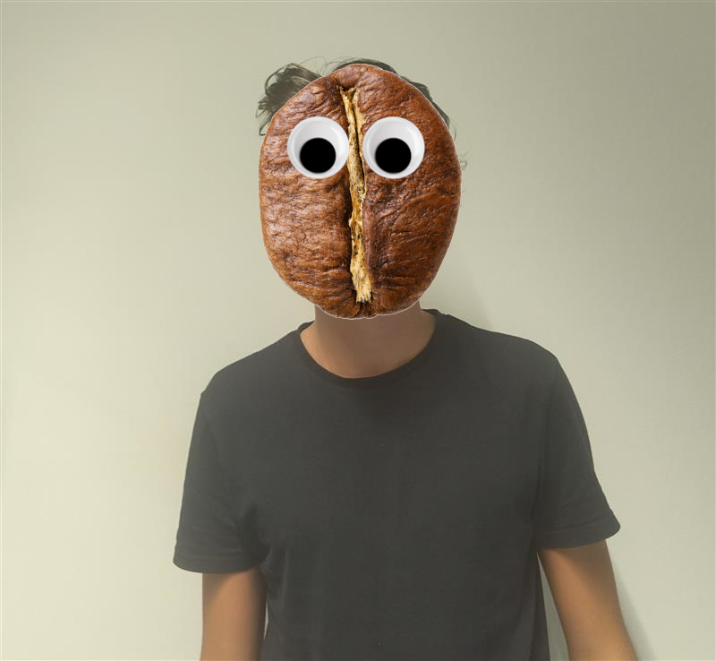
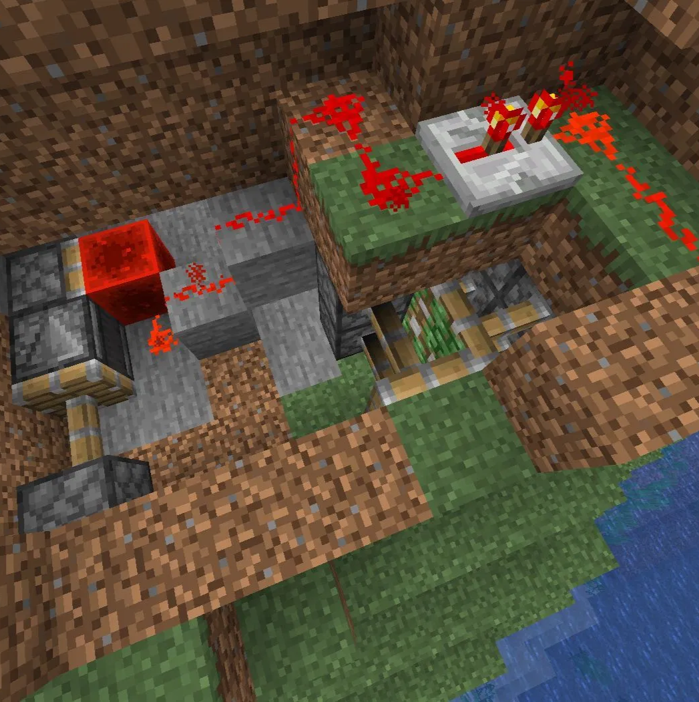
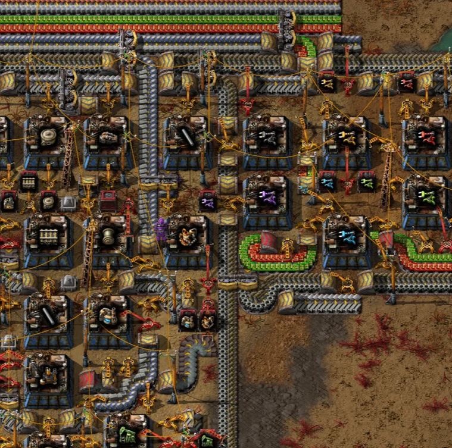
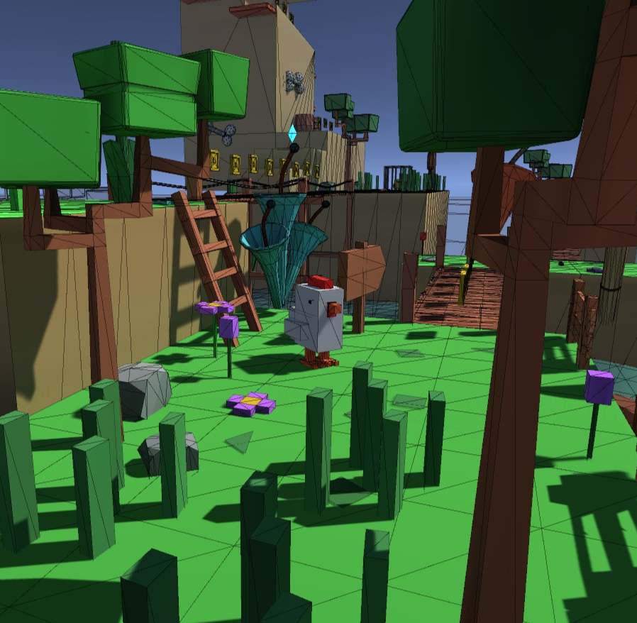

Auteur
Introduction
Je suis étudiant en informatique à l'École Technique des Métiers de Lausanne (ETML). Cette page web a été créée dans le cadre d'un projet scolaire au sein de cet établissement, dans le but d'apprendre et de maîtriser les langages HTML et CSS.
À travers ce projet, j'ai pu découvrir les bases du développement web, notamment la structuration d'une page avec HTML et la mise en forme avec CSS. Ce travail m'a également permis de développer ma logique et ma créativité, tout en me familiarisant avec les bonnes pratiques du web.
Loisir et hobby
J'ai toujours été attiré par tout ce qui touche de près ou de loin à l'informatique. Je suis notamment un grand amateur de jeux comme Minecraft ou Factorio, où la créativité et la logique sont essentielles pour résoudre des problèmes et construire des systèmes efficaces.
En parallèle, je m'intéresse au développement informatique et j'ai déjà eu l'occasion de créer plusieurs petits jeux et programmes. Ces projets me permettent d'expérimenter et d'apprendre de nouvelles techniques afin de renforcer mes compétences en programmation.


